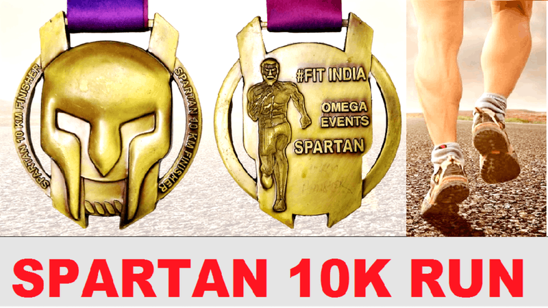

EVENT INFORMATION
Spartan Virtual 10K Run - Get Unique Medal by Courier
Run / Walk / Jog / Cycle at your own Place, Gym or Treadmill.
Distance to be covered 10 km in 14 days. You can do 1 km for 10 days or 2 km for 5 days or 5 km for 2 days or random distance as per your convenience.
Run is to promote Fitness.
A virtual Marathon / Cyclothon is a challenge you give yourself to reach a designated goal of finishing a specified distance by running or walking or cycling at a time and location of your choice. ... The big difference is that you can run this race anywhere, with anyone, and any time of the day.
Share screenshot of your Timing App - Whatsapp on 8097712656. You can use any Timing app like Strava, Runkeeper, Nike, Endomondo, Mobile apps, Health apps etc.
Get Medal by Courier.
For queries please whatsapp on 98XXXXXXXX6.